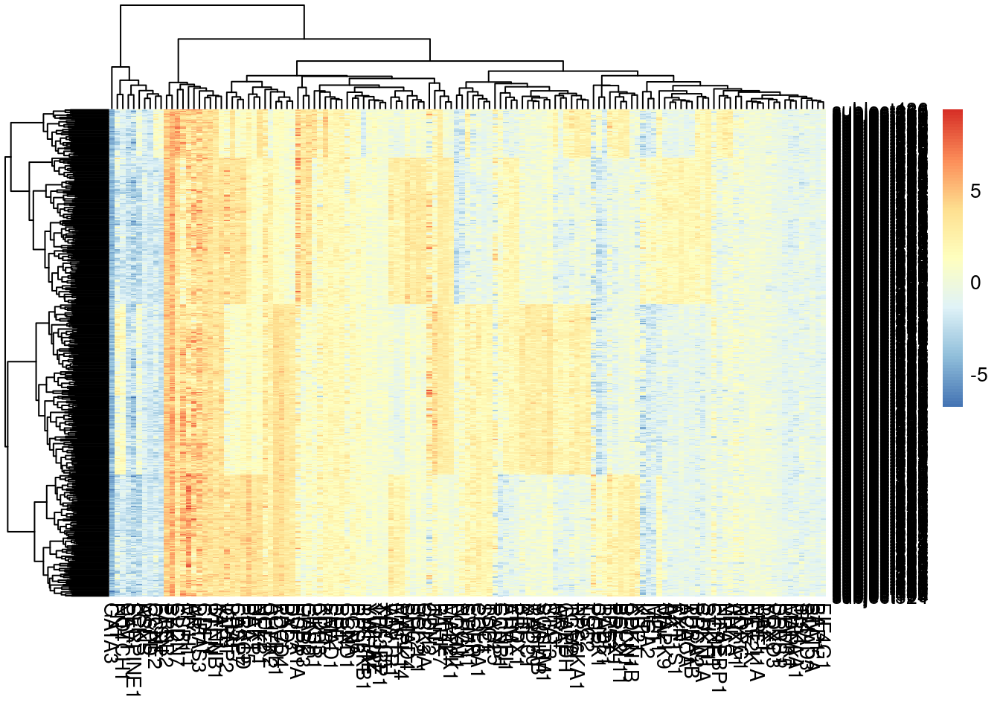
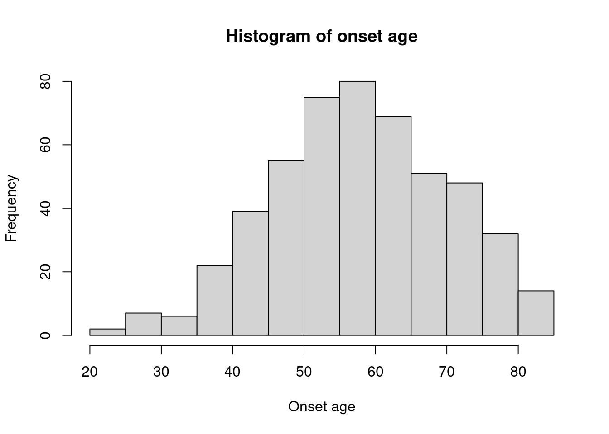
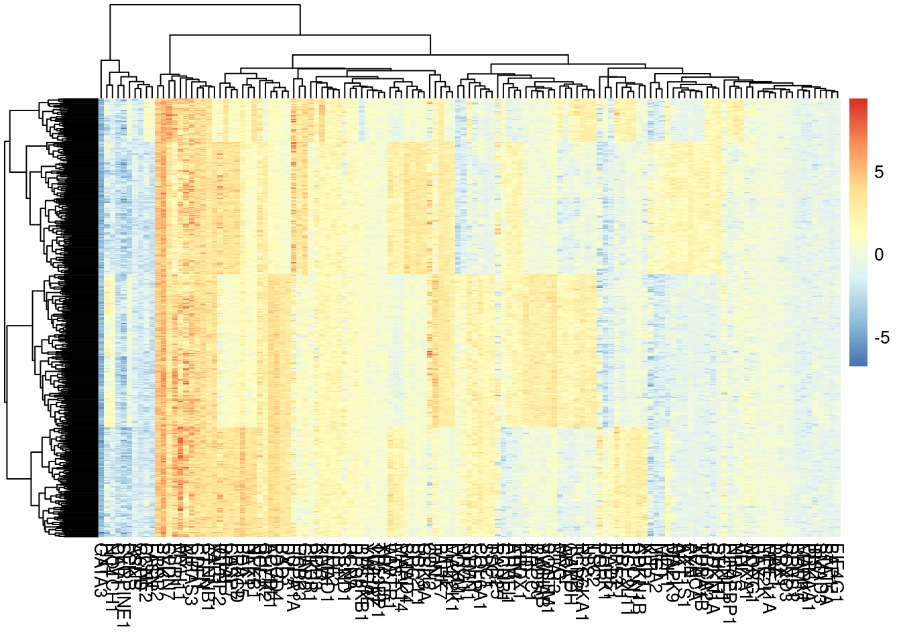

5 Οπτικοποίηση και παραδείγμα με αληθινά δεδομένα
Ένα σημαντικό κομμάτι μίας περιγραφικής στατιστικής ανάλυσης είναι η οπτικοποίηση δεδομένων.
Για την οπτικοποίηση ποσοτικών δεδομένων χρησιμοποιούμε τα ιστογράμματα (histograms), μέσω της εντολής
hist(). Τα δεδομένα ανατίθενται σε ομάδες, οι οποίες αναπαριστούνται με ορθογώνια. Η βάση
κάθε ορθογωνίου αντιστοιχεί στο εύρος της αντίστοιχης ομάδας (στη συγκεκριμένη περίπτωση 5 χρόνια), ενώ το ύψος αντιστοιχεί στη συχνότητα της αντίστοιχης παρατήρησης.
metadata <- read.csv("metadata.csv")
hist(metadata$age)
hist(metadata$age, main = "Histogram of onset age", xlab = "Onset age")
Ένας αρκετά συχνός τρόπος οπτικοποίησης συνεχόμενων μεταβλητών είναι μέσω heatmaps (χάρτης θερμότητας). Ο όρος heatmap αναφέρεται σε ένα δισδιάστατο πίνακα όπου κάθε κελί (τιμή) αναπαραστάται με ένα συγκεκριμένο χρώμα. Οι γραμμές και στήλές ενός heatmap οργανώνονται βάση της ομοιότητάς τους, με τις πιο παρόμοιες παρατηρήσεις να παρουσιάζονται δίπλα-δίπλα στο γράφημα. Μέσω παρόμοιων οπτικοποιήσεων, είναι δυνατό να ομαδοποιήσουμε δεδομένα σε υποομάδες (clusters).
library(pheatmap)
data <- read.csv("patient_data.csv")
pheatmap(data)
pheatmap(data, show_rownames = F)
Η R προσφέρει πολλές δυνατότητες για την οπτικοποίηση δεδομένων, είτε μέσω της Base R ή επιπλέον πακέτων. Ενα από τα πιο χρήσιμα πακέτα που θα ήταν καλό να εξοικειωθείτε είναι το ggplot2. Η σύνταξη των εντολών μπορεί να φανεί κάπως ιδιόμορφη σε πολλούς χρήστες, αλλά στο παρακάτω link θα βρείτε μερικές χρήσιμες πηγές για να ξεκινήσετε. Δείτε περισσότερα εδώ